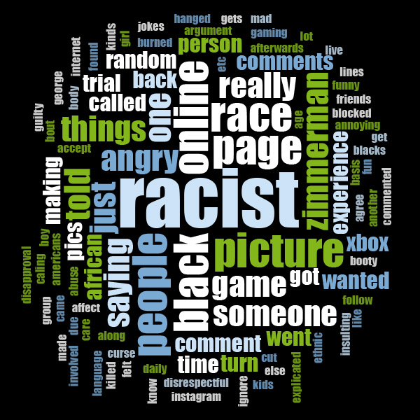

Health Effects of Racism and Discrimination

Health effects (or health impacts) are changes in health resulting from exposure to a source. Health effects are an important consideration in many areas, such as hygiene, pollution studies, occupational safety and health, and health sciences in general.
Racism, or discrimination based on race or ethnicity, is a key contributing factor in the onset of disease. It is also responsible for increasing disparities in physical and mental health among Black, Indigenous, Asians, and people of color. Racism and descrimination also
exist in religions. Studies have shown that people exposed to racism have poorer health outcomes (particularly for mental health), alongside both reduced access to health care and poorer patient experiences.
Physcial Effects
People who are discriminated against also often times have higher levels of stress, which can cause hypertension, heart disease, and chronic illness.
Stress associated with experiencing racism can have long lasting physical effects.
Stress can elevate blood pressure and weaken the immune system, which, in turn, raises the risk of developing long-term health conditions.
Racism is associated with higher rates of stress, increasing a person of color’s risk of developing high blood pressure.
Research has found that discrimination is linked to higher rates of smoking, alcohol use, drug use, and unhealthful eating habits.
- Low energy
- Headaches
- Aches, pains, and tense muscles due to stress
- Chest pain and rapid heartbeat
- Insomnia
- Hypertension
- Loss of sexual desire and/or ability
- Nervousness and shaking, ringing in the ear, cold or sweaty hands and feet
- Dry mouth and difficulty swallowing
- Clenched jaw and grinding teeth
- Becoming easily agitated, frustrated, and moody
- Feeling overwhelmed, like you are losing control or need to take control
- Avoiding others
- Obesity and other eating disorders
- Skin and hair problems, such as acne, psoriasis, and eczema, and permanent hair loss
Go to Top
Mental Effects
According to trusted researches, Racism and Discrimination is twice as likely to affect mental health than physical health. Unaddressed mental health problems can have a negative influence on homelessness, poverty, employment, safety, and the local economy. They may impact the productivity of local businesses and health care costs, impede the ability of children and youth to succeed in school, and lead to family and community disruption.
- Depression
- Emotional distress
- Stress
- Anxiety
- Trauma
- Post-traumatic stress disorder (PTSD)
- Suicidal thoughts
- Unhappiness and decreased enjoyment of life.
- Relationship difficulties.
- Social isolation.
- Finding it hard to make decisions.
- Feeling bad about yourself (low self-esteem), lonely, worthless, and depressed
Go to Top